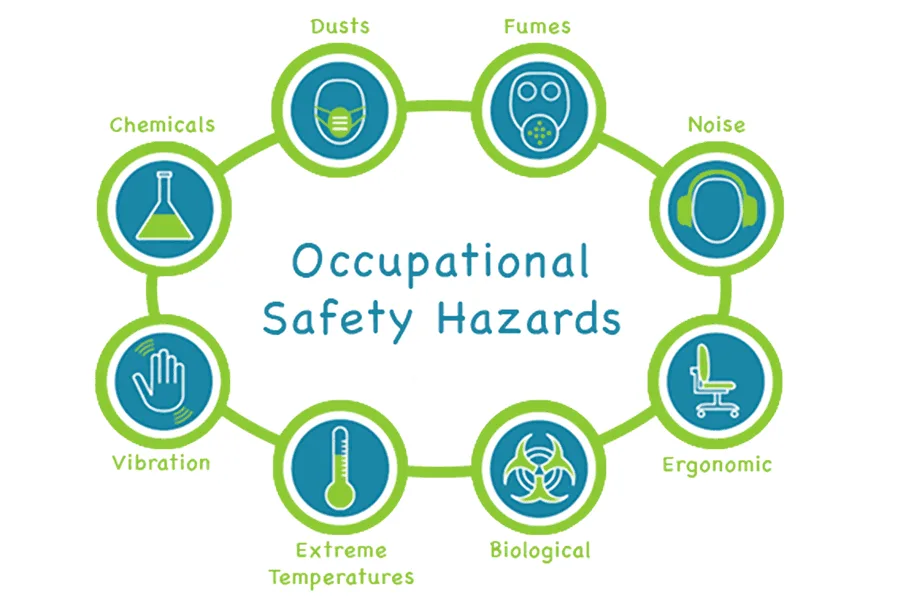
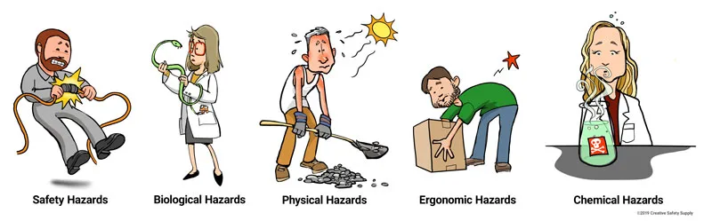
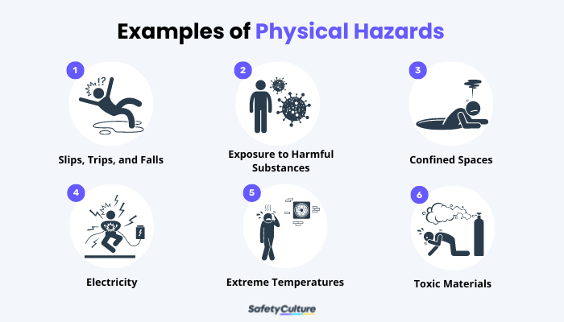
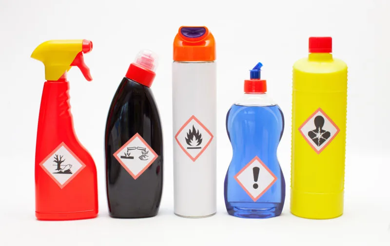
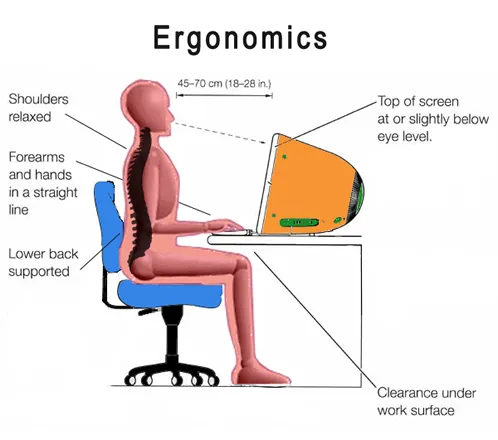

Expanded Nursing Uganda Explanation
Occupational health hazards in different should be understood beyond a short definition. Link the concept to patient history, focused assessment, common risks, nursing priorities, documentation and evaluation of outcomes.
01 HAZARD PREVENTION AND CONTROL
Hazard prevention is any workplace-specific program designed to stop the occupancy or occurrence of work-related injuries and diseases.
Hazard control refers to the implementation of policies, standards, procedures and physical changes to eliminate or minimize adverse risks.
Hazards are anything that can cause harm to workers, such as injuries, illnesses, or accidents.
Hazard Identification : This is the initial step in the risk assessment process. It involves recognizing and listing potential hazards that may exist in a given environment.
Hazard identification is the process of identifying, locating, and documenting anything that could cause harm, damage, injury, or adverse effects . This step is more qualitative and involves recognizing what hazards could be present.
02 Methods of hazard control/Hierarchy of Controls at the workplace
There are different methods of hazard prevention and control, which can be ranked according to a hierarchy of effectiveness . The higher the level in the hierarchy, the more effective the method is. The hierarchy of controls is as follows:
- Elimination : Eliminating the Risk (Level One) : This is the most effective method, as it removes the hazard completely from the workplace. For example, cleaning spills from the floor immediately or replacing worn-out equipment or wires eliminates the risk of slips, trips, or electric shocks.
- Substitution : Substituting the Risk (Level Two) : This is the second most effective method, as it replaces a hazard with a less hazardous one. For example, using single-use syringes instead of re-usable ones reduces the risk of infection. However, substitution may introduce new hazards, so a new risk assessment should be done after the change.
- Isolation : Isolate the Risk (Level Three) : This is the third most effective method, as it separates workers from the hazard by using barriers or distance. For example, placing dangerous machinery in a separate room and installing remote control systems isolates workers from the risk of injury. Another example is using isolation rooms for patients with contagious diseases.
- Engineering controls : Engineering Controls (Level Four) : Engineering risk control is the process of designing and installing additional safety features to workplace equipment. These are physical modifications or additions to equipment or the work environment that reduce exposure to hazards. For example, installing ventilation systems in areas with harmful gasses or dust or guardrails on raised walkways reduces the risk of respiratory problems or falls.
- Administrative controls : Administrative Controls (Level Five) : These are rules, policies, procedures, or training that aim to change workers’ behavior or work practices to avoid or reduce hazards. For example, providing safety training on how to use equipment properly or arranging work schedules to limit exposure time in hazardous areas reduces the risk of human error or fatigue.
- Personal protective equipment (PPE) : Personal Protective Equipment (Level Six) : These are items that workers wear or use to protect themselves from hazards, such as hard hats, ear plugs, gloves, masks, etc. This is the least effective method in the hierarchy, as it does not remove or reduce the hazard itself. It only protects workers from harm if an incident occurs. Therefore, PPE should always be used in combination with other methods and as a last resort.
03 Considerations for Effective Control and Prevention of Hazards
- Involve workers in the process . Workers often have the best understanding of the hazards in the workplace and how they can be controlled.
- Identify and evaluate options for controlling hazards. Use a “hierarchy of controls” to select the most effective and permanent controls. The hierarchy of controls prioritizes engineering controls (such as eliminating or substituting hazards) over administrative controls (such as work practices) and personal protective equipment (PPE).
- Use a hazard control plan to guide the selection and implementation of controls. The hazard control plan should describe how the selected controls will be implemented and who is responsible for their implementation.
- Develop plans to protect workers during non-routine operations and emergencies. These plans should include procedures to control hazards that may arise during non-routine operations, such as maintenance and repair, and during emergencies, such as fires and explosions.
- Implement selected controls in the workplace. Implement the controls according to the hazard control plan and track progress to ensure that they are effective.
- Follow up to confirm that controls are effective. Track progress in implementing the controls, inspect and evaluate the controls once they are installed, and follow routine preventive maintenance practices.
04 Prevention of Occupational Health Hazards
There are three levels of prevention of occupational health hazards: primary prevention , secondary prevention , and tertiary prevention .
Primary prevention aims to prevent the exposure to hazards in the first place. This can be done through a variety of measures, including:
- Health education : Educating workers about the hazards in their workplace and how to protect themselves.
- Pre-employment medical screening: Screening workers for health conditions that may make them more susceptible to hazards.
- Establishing and enforcing health and safety regulations: Ensuring that workplaces are safe and that workers are following safe work practices.
- Providing personal protective equipment: Providing workers with personal protective equipment (PPE) to protect them from hazards.
- Engineering controls : Designing workplaces to reduce or eliminate hazards.
Secondary prevention aims to identify and treat health problems early , so that they do not become more serious. This can be done through a variety of measures, including:
- Health surveillance : Regularly monitoring workers’ health for signs of occupational health problems.
- Health screening : Testing workers for specific health problems that may be related to their work.
- Treatment : Providing workers with treatment for occupational health problems.
Tertiary prevention aims to minimize the effects of occupational health problems that have already occurred. This can be done through a variety of measures, including:
- Rehabilitation : Helping workers who have been injured or disabled by occupational health problems to return to work.
- Compensation : Providing financial compensation to workers who have been injured or disabled by occupational health problems.
- Prevention of further injury or disability: Taking steps to prevent workers from being injured or disabled again.
05 **Occupational hazard assessment**
Occupational hazard assessment is the routine examination of; sites, equipment and human resource to ensure prevention of occurrence of an occupational hazard
06 Importance of Occupational Hazard Assessment.
This assessment is of importance to;
- Employer
- Employees
- And community
Employer :
- Compliance with regulations : Occupational hazard assessment helps employers comply with legal and regulatory requirements related to workplace safety. By identifying and mitigating hazards, employers demonstrate their commitment to providing a safe working environment.
- Risk management : Assessing occupational hazards enables employers to identify potential risks and implement appropriate control measures. This proactive approach reduces the likelihood of workplace accidents, injuries, and related financial liabilities.
- Enhanced productivity : A safe and healthy work environment promotes employee well-being, job satisfaction, and morale. By conducting hazard assessments, employers can address risks and create a conducive workplace, leading to improved productivity and efficiency.
- Reputation and credibility: Employers who prioritize occupational hazard assessment showcase their commitment to employee safety and welfare. This enhances their reputation, builds trust among employees and stakeholders, and helps attract and retain talented workers.
Employee :
- Personal safety : Occupational hazard assessments prioritize employee safety by identifying and addressing potential workplace hazards. Employees can work with peace of mind, knowing that their well-being is valued, and appropriate measures are in place to mitigate risks.
- Health and well-being : Identifying and controlling hazards through assessments promotes employee health and well-being. By reducing exposure to occupational risks, employees are less likely to develop work-related illnesses or injuries, leading to improved overall health and quality of life.
- Empowerment and involvement : Involving employees in hazard assessments empowers them to actively participate in maintaining a safe work environment. It allows them to contribute their insights and concerns, fostering a culture of safety and ownership within the organization.
- Confidence and job satisfaction : Employees who feel safe and protected in their work environment experience higher job satisfaction and are more engaged in their roles. Occupational hazard assessments contribute to this sense of confidence, leading to increased employee retention and loyalty.
Community :
- Public safety : Occupational hazard assessment benefits the community by ensuring that workplaces operate in a manner that does not pose risks to public safety. Preventing accidents and incidents at work contributes to the overall well-being of the community.
- Environmental protection : Hazard assessments often include evaluating the environmental impact of work processes. By identifying and controlling hazards that could harm the environment, occupational hazard assessments contribute to sustainable and responsible practices.
- Community perception : Companies that prioritize occupational hazard assessments demonstrate their commitment to responsible business practices. This positive perception enhances community trust and goodwill toward the organization, fostering positive relationships and potentially attracting community support.
Human Resource
- Pre-placement/pre-employment medical examination: This examination has three aims: To determine the suitability of an applicant for a particular job, from the viewpoints of both the risk to the applicant’s health and safety, and the risk to other workers and members of the community.
- To detect untreatable pathological conditions and asymptomatic diseases.
- To provide a baseline record against which any future findings or routine examinations can be compared.
- Periodic examinations: These examinations are conducted to detect adverse trends caused by work.
- Special physical examinations: Every worker should have a physical examination before being allowed to return to work following an illness, and also following signs of difficulty to cope with work, and among those with chronic illnesses.
Equipment and Workplace/Site
- Routine maintenance and servicing of equipment: This helps to identify and correct potential hazards before they cause an accident.
- Repair and replacement of equipment: This ensures that equipment is in good working order and does not pose a hazard to workers.
- Provision of standard operating protocols: These protocols provide clear instructions on how to operate equipment safely.
- Routine drills to employees: These drills help employees to learn how to respond to emergencies in a safe and effective manner.
- Provision of protective wears: This includes items such as safety glasses, hard hats, and gloves, which can help to protect workers from injury.
- Installation of warning posters in work environment and restriction of access to some areas: This helps to keep workers safe by warning them of potential hazards and restricting access to areas where there is a risk of injury.
- Standard training of employees before employment and handling of new machinery: This training helps employees to learn how to operate equipment safely and to identify and avoid hazards.
- Installation of fire extinguishers: This helps to prevent the spread of fire and to protect workers from burns.
- Provision of sanitary points such as hand washing equipment: This helps to prevent the spread of infection.
- Assembly points: These points are designated areas where workers can gather in the event of an emergency.
07 Steps in Occupational Hazard Assessment and Identification
Occupational hazards are any sources of potential damage, harm or adverse effects on the health and safety of workers or the environment. Occupational hazard assessment and identification is the process of finding, recognizing, and describing the hazards that exist in the workplace, and analyzing and evaluating the risks associated with these hazards. The purpose of this process is to prevent or reduce the occurrence and severity of work-related injuries, illnesses, and fatalities.
The following are some steps that can be followed to conduct occupational hazard assessment and identification:
Before inspecting the workplace for hazards, it is useful to gather and review any information that may already be available from both internal and external sources. This can include:
- Inspecting the work place for safety : Records of previous incidents, injuries, illnesses, near misses, complaints, or suggestions related to workplace hazards
- Identify hazards: Safety data sheets , labels, manuals, or instructions for hazardous products or equipment used in the workplace.
- Conducting incident investigations: Regulations, standards, codes of practice, or guidelines that apply to the workplace or the industry
- Reports or publications from professional associations, research institutions, government agencies, or other organizations that provide information on workplace hazards
- Input from workers, supervisors, managers, health and safety committees, unions, or other stakeholders who have knowledge or experience of the workplace hazards
The collected information should be organized and reviewed with workers to determine what types of hazards may be present and which workers may be exposed or potentially exposed. This can help identify areas or activities that need more attention during the inspection.
Even if some information on workplace hazards is already available, it is still important to inspect the workplace regularly for any new or existing hazards that may have been overlooked or introduced over time. Hazards can arise from changes in workstations, processes, equipment, tools, materials, or environment. They can also result from poor maintenance, housekeeping, or training practices.
A workplace inspection involves observing the physical conditions and work activities in the workplace, and identifying any hazards that could cause harm to workers or the environment. Some common methods of inspecting the workplace are:
- Walking around the workplace and looking for any obvious signs of hazards, such as spills, leaks, broken equipment, exposed wires, blocked exits, etc.
- Talking to workers and asking them about any concerns or issues they have regarding their work environment, tasks, equipment, tools, materials, etc.
- Using checklists or forms to guide the inspection process and ensure that all relevant aspects of the workplace are covered
- Taking notes, photos, videos, measurements, samples, or other records of the observed hazards and their locations
Workers can be a very useful internal resource for inspecting the workplace for hazards, especially if they are trained in how to identify and assess risks. Workers have firsthand knowledge of their work conditions and tasks, and may be aware of some hazards that are not obvious to others. Involving workers in the inspection process can also increase their awareness and participation in health and safety matters.
In addition to inspecting the workplace for regular hazards that occur during normal operations, it is also necessary to identify any hazards that may arise during emergency or non-routine situations. These are situations that are not part of the usual work activities or procedures, but may occur unexpectedly or occasionally due to various factors. Some examples of emergency or non-routine situations are:
- Fire
- Explosion
- Chemical spill
- Power outage
- Natural disaster
- Equipment failure
- Maintenance work
- New project
- Temporary assignment
Emergency or non-routine situations can pose different or additional risks to workers or the environment than those encountered during normal operations. Therefore, it is important to identify these risks beforehand and prepare appropriate measures to prevent or respond to them effectively.
Some ways to identify hazards associated with emergency or non-routine situations are:
- Reviewing past incidents or near misses that involved emergency or non-routine situations
- Consulting with experts or specialists who have knowledge or experience of dealing with emergency or non-routine situations
- Conducting scenario analysis or simulation exercises to anticipate potential outcomes and consequences of emergency or non-routine situations
- Developing emergency plans or procedures that outline the roles and responsibilities of workers and other parties in case of emergency or non-routine situations
After identifying all the possible hazards in the workplace, it is necessary to characterize their nature, identify interim control measures, and prioritize them for control.
Characterizing the nature of identified hazards means describing their sources, forms, effects, and severity. This can help determine how likely they are to cause harm, and how serious the harm could be. Some factors that can be used to characterize the nature of identified hazards are:
- Frequency: how often the hazard occurs or is encountered
- Duration: how long the hazard lasts or is exposed
- Magnitude: how large or intense the hazard is
- Probability: how likely the hazard is to cause harm
- Severity: how serious the harm could be
Identifying interim control measures means taking temporary actions to reduce or eliminate the risk of harm from the identified hazards until permanent solutions can be implemented. Interim control measures can include:
- Isolating or removing the hazard from the workplace or workers
- Providing personal protective equipment (PPE) or other safety devices to workers
- Posting warning signs or labels to alert workers of the hazard
- Implementing administrative controls, such as limiting access, exposure, or work hours to the hazard
- Providing training, information, or instruction to workers on how to avoid or handle the hazard
Prioritizing the hazards for control means ranking the identified hazards according to their level of risk and urgency of action. This can help allocate resources and plan interventions more effectively and efficiently. Some criteria that can be used to prioritize the hazards for control are:
- Legal requirements: whether the hazard violates any laws, regulations, standards, or codes of practice that apply to the workplace or the industry
- Worker concerns: whether the hazard affects a large number of workers or causes significant distress or dissatisfaction among workers
- Cost-benefit analysis: whether the benefits of controlling the hazard outweigh the costs of doing so
- Hierarchy of controls: whether the hazard can be controlled by using more effective and reliable methods, such as elimination, substitution, engineering controls, administrative controls, or PPE
Note : Many hazards can be identified using common knowledge and available tools. For example, you can easily identify and correct hazards associated with broken stair rails and frayed electrical cords. Workers can be a very useful internal resource, especially if they are trained in how to identify and assess risks
08 Good safety Practices
Good safety practices are the actions that can be taken to prevent accidents and injuries in the workplace. They can help to create a safe and healthy environment for employees
- Provide regular safety training. This training should cover all aspects of workplace safety, including how to identify and avoid hazards, how to use personal protective equipment (PPE), and how to respond to emergencies.
- Encourage employees to report hazards. Employees should feel comfortable reporting any hazards they see, no matter how small they may seem. Employers should have a system in place for employees to report hazards and should investigate all reports promptly.
- Provide PPE. The right PPE can help protect employees from injury. Employers should provide PPE that is appropriate for the hazards in the workplace and should ensure that employees know how to use it properly.
- Maintain equipment and facilities. Equipment and facilities should be regularly inspected and maintained to ensure that they are safe to use. Employers should also have a system in place for reporting and correcting unsafe conditions.
- Create a culture of safety. Employers should create a culture of safety in the workplace where employees feel valued and respected. This means creating a workplace where employees feel comfortable speaking up about safety concerns and where they are not afraid to take risks.
- Hold regular safety meetings. These meetings should be used to discuss safety issues and to remind employees of the importance of safety. They should also be used to share information about new hazards or changes to safety procedures.
- Enforce safety rules. Safety rules are in place to protect employees. Employers should enforce these rules consistently and fairly.
- Provide incentives for safety. Employers should provide incentives for safety, such as rewards for employees who have a good safety record. This can help to encourage employees to be more safety conscious.
- Celebrate safety successes. When employees do something to improve safety, employers should celebrate their success. This can help to reinforce the importance of safety and to encourage employees to continue to work safely.
- Make safety a priority. Safety should be a top priority for employers. This means providing the resources and support necessary to create a safe workplace.
09 Nursing Uganda Clinical Lens
Use Occupational health hazards in different as a practical nursing topic, not only a memorized definition. Combine safety, therapeutic communication, mental status assessment and dignity.
- What to understand first: define occupational health hazards in different, identify the normal or expected pattern, then explain what changes when the patient is unwell.
- Why it matters in care: the nurse must recognize risk early, explain findings clearly, document accurately and know when to escalate.
- How to revise it: connect each point to assessment, nursing diagnosis or care problem, intervention, rationale and evaluation.
10 Assessment Guide
- Appearance, behaviour, speech, mood, thought process, perception, cognition and insight.
- Risk of self-harm, harm to others, neglect, withdrawal, substance use or relapse.
- Support systems, medication adherence, sleep, appetite and triggers.
11 Nursing Priorities, Rationales and Outcomes
- Maintain safety using the least restrictive approach possible.
- Use calm communication, active listening and non-judgmental observation.
- Support adherence, coping skills, family involvement and follow-up.
The rationale for these priorities is patient safety: nursing actions should prevent deterioration, reduce discomfort, support recovery and create clear evidence for the next caregiver.
- Expected outcome: Risk reduces, the patient engages with care, symptoms are monitored and a realistic safety or relapse plan is in place.
12 Patient Teaching and Revision Check
- Explain occupational health hazards in different in simple language the patient or caregiver can repeat back.
- Teach warning signs, medicine or follow-up instructions, hygiene or lifestyle points where relevant.
- For exams, prepare a short answer using: definition, causes or risk factors, signs, assessment, management, complications and prevention.
- For ward practice, document baseline findings, actions taken, patient response and the plan for review.
Illustrations and Diagrams (12)





4 more diagrams available, open the lesson for full illustrations.
Related Video Lectures
Watch nursing lecture videos on YouTube for this topic. Opens in a new tab.
Watch on YouTubeExternal link: YouTube may use its own cookies and terms. Nursing Uganda is not affiliated with YouTube.